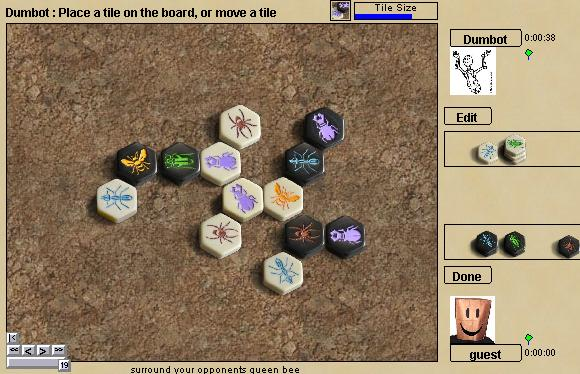

Улей
Улей это настольная игра без доски, в которую играют шестиугольными
фишками. По структуре игра напоминает традиционные шахматы украшенные
темой насекомых. Цель игры - окружить пчелиную матку вашего
противника. Другие фишки обозначены насекомыми (муравей, жук, кузнечик,
паук) и двигаются по правилам, схожим с их прообразами. Это звучит
немного глупо, но игра хорошо сбалансирована и очень забавна.
Вы можете прочитать детали в официальных
правилах, но кратко: фишки ходят, но никогда не убираются и всегда
должны составлять единый "улей", муравьи ходят куда угодно по периметру
улья, жуки могут залезать на другие фишки, кузнечики двигаются из
одного конца улья в другой, а пауки могут ходить ровно на три клетки.
Изменения в правилах:
на Boardspace как для белых так и для чёрных запрещён первый ход "Королевой".
Джон Йанни поддерживает это изменение, призванное устранить избыток ничьих
в играх с таким началом.
Боты: Dumbot крепкий противник,
но звёзд с неба не хватает.
|

|